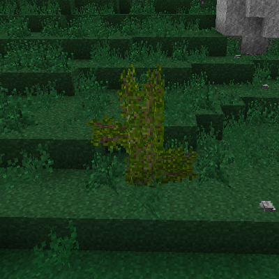

Index / Світ / Дикоростучі фрукти
Дикоростучі фрукти
У світі росте багато різних сортів дикоростучіх фруктів. Їх можна збирати, щоб їсти, або вирощувати, використовуючи відповідне обладнання. Їх можна знайти на різних кущах і деревах. Взагалі, плоди можна знайти на трьох видах рослин: фруктові дерева, високі, та низькі кущі.
Усі плодові рослини мають загальний життєвий цикл. Вони будуть рости, квітнути, давати плоди, а потім залишатися в стані спокою протягом річного циклу.
Плодові рослини є сезонними. У холодну пору року ці рослини виглядатимуть сірими та млявими. Навесні вони стають зеленими і здоровими, готуються до плодоношення і ростуть. Точний час, коли це відбувається, залежить від плоду. Плодові рослини можуть загинути і від старості, і від невідповідних кліматичних умов.
Фруктові дерева
Фруктові дерева виростають із крихітних саджанців у великі квітучі дерева. Гілки фруктових дерев — це їхнє серце, і вони будуть рости, поки існують сприятливі кліматичні умови. Листя згодом виростає з гілок. Потім з'являються квіти і, нарешті плоди.

Звичайне фруктове дерево.
Плодове дерево починається з саджанця. Саджанці почнуть рости, як тільки встановлено першу частину дерева, але згідно сезону. Розмір готового дерева приблизно визначається кількістю саджанців у вихідному блоці. Більше саджанців — більше дерево.
До одного блоку можна додати більше саджанців щепленням. Щоб з'єднати саджанці у одному блоці треба Right Click на ньому, тримаючи саджанець та ніж у руках.
To get saplings from a fruit tree, break the 'elbow' blocks (branch blocks that are attached to a block on one side and above) tree with an Axe. Saplings can also be placed on these 'elbow' sections, if they are not too high up in the tree. This allows one fruit tree to grow multiple fruits. Harvesting fruit is done with Right Click when the leaf block is bearing fruit. This will give one fruit, and revert the plant back to its growing stage, until it goes dormant for the winter.
Вишня
Температура: 5 - 25 °C
Кількість опадів: 100 - 350mm
Multiblock
Помісячні етапи вишневого дерева
Яблуня зеленоплідна
Температура: 1 - 25 °C
Кількість опадів: 110 - 280mm
Multiblock
Помісячні етапи зеленоплідної яблуні
Лимонне дерево
Температура: 10 - 30 °C
Кількість опадів: 180 - 470mm
Multiblock
Помісячні етапи лимонного дерева
Оливкове дерево
Температура: 5 - 30 °C
Кількість опадів: 150 - 500mm
Плоди оливкового дерева використовують у виготовленні оливкової олії.
Multiblock
Помсячні етапи оливкового дерева
Апельсинове дерево
Температура: 15 - 36 °C
Кількість опадів: 250 - 500mm
Multiblock
Помісячні етапи апельсинового дерева
Персикове дерево
Температура: 4 - 27 °C
Кількість опадів: 60 - 230mm
Multiblock
Помісячні етапи персикового дерева
Слива
Температура: 15 - 31 °C
Кількість опадів: 250 - 400mm
Multiblock
Помісячні етапи сливового дерева
Яблуня червоноплідна
Температура: 1 - 25 °C
Кількість опадів: 100 - 280mm
Multiblock
Помісячні етапи чевоноплідної яблуні
Банан
Температура: 17 - 35 °C
Кількість опадів: 280 - 500mm
Банани - це особливий вид фруктів. Вони ростуть лише вертикально. У них немає гілок, а плоди лише на самому верхньому блоці. Саджанці висаджують з квітучої частини рослини. Зібраний урожай банана гине і більше не дає плодів. Навесні його необхідно пересадити.
Multiblock
Представник бананової рослини
Високі кущі
Високі кущі - це фруктові блоки, які здатні рости в усіх напрямках і поширюватися. Вони або ростуть вгору до трьох блоків, або розміщують пагони з боків, які можуть вирости у новий кущ. Через деякий час кущі перестануть розростатися і досягнуть зрілості. Зрізання цих кущів гострим інструментом має шанс скинути новий кущ. Повністю дозрілі кущі завжди опадають самі.
Дикий кущ.
Високі кущі здатні розростатися, коли їхнім пагонам є де прижитися. На практиці це означає, що для розміщення пагону потрібен міцний блок під ним. Забезпечення рівної відкритої ділянки, вільної від трави чи іншого сміття, дає їм найкращі шанси для росту.
Кущі, на відміну від фруктових дерев, враховують навколишні водні блоки, щоб визначити вологість блоку під собою. Фруктові ж дерева враховують лиш кількість опадів.
Будь-який повний блок куща може формувати ягоди. Ягоди можна збирати, клацнувши Right Click.
Кущ ожини
Температура: 7 - 24 °C
Вологість: 24 - 100 %
Кущі ожини з'являються лише в місцях з невеликою кількістю дерев.
Multiblock
Помісячні стадії ожинового куща
Кущ малини
Температура: 5 - 25 °C
Вологість: 24 - 100 %
Кущі малини з'являються тільки в місцях з невеликою кількістю дерев.
Multiblock
Помісячні стадії малинового куща
Кущ чорниці
Температура: 7 - 29 °C
Вологість: 12 - 100 %
Кущі чорниці з'являються лише в місцях з невеликою кількістю дерев.
Multiblock
Помісячні стадії чорничного куща
Кущ бузини
Температура: 10 - 33 °C
Вологість: 12 - 100 %
Кущі бузини з'являються лише в місцях з невеликою кількістю дерев.
Multiblock
Помісячні стадії куща бузини
Малі кущі
Малі кущі є різновидом низьких фруктових блоків, що з'являться в лісах. Невеликі кущі іноді розростаються на навколишні блоки, створюючі нові. Зібрати ягоди можа клацнувши Right Click.
Multiblock
Кущ кизилу
Температура: 15 - 35 °C
Вологість: 24 - 100 %
Multiblock
Кущ аґрусу
Температура: 5 - 27 °C
Вологість: 24 - 100 %
Multiblock
Кущ сніжноягіднику
Температура: -7 - 18 °C
Вологість: 24 - 100 %
Multiblock
Кущ морошки
Температура: -2 - 17 °C
Вологість: 9 - 100 %
Multiblock
Кущ полуниці
Температура: 5 - 28 °C
Вологість: 12 - 100 %
Multiblock
Кущ брусниці
Температура: -6 - 17 °C
Вологість: 12 - 100 %
Multiblock
Журавлина
Temperature: -5 - 17 °C
Кущі журавлини можна вирощувати тільки під водою.